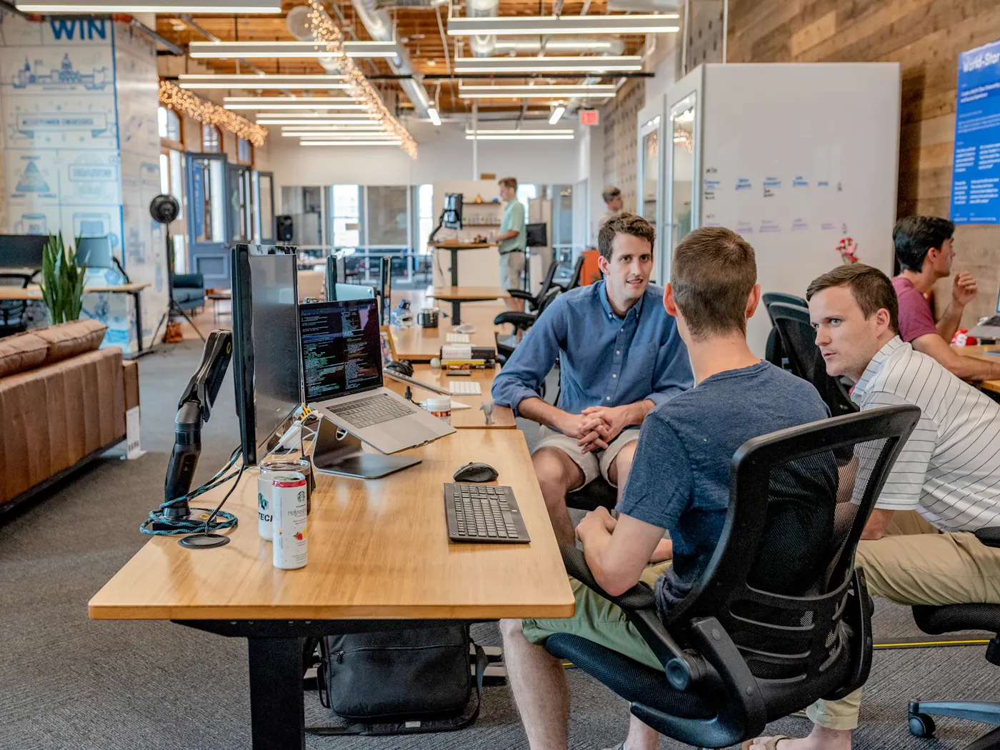
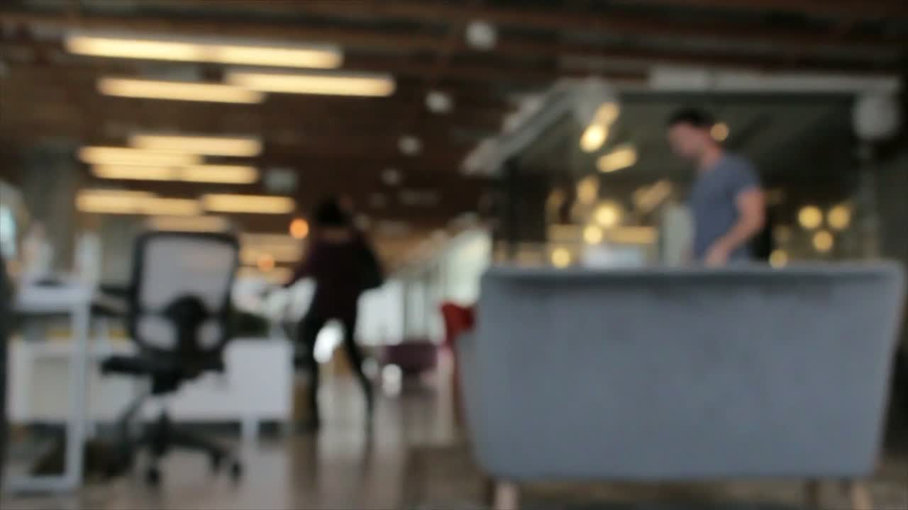
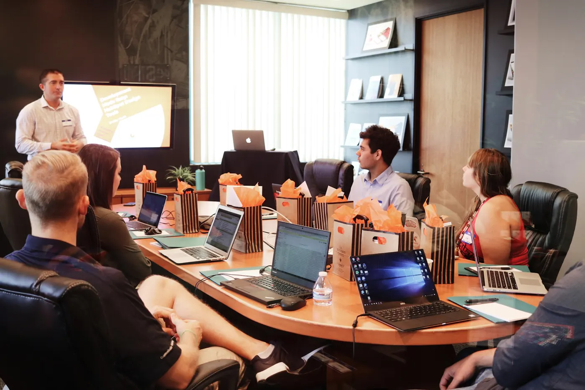
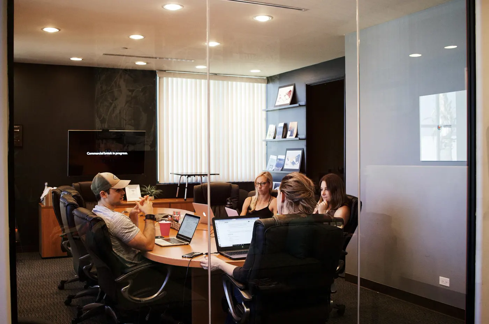
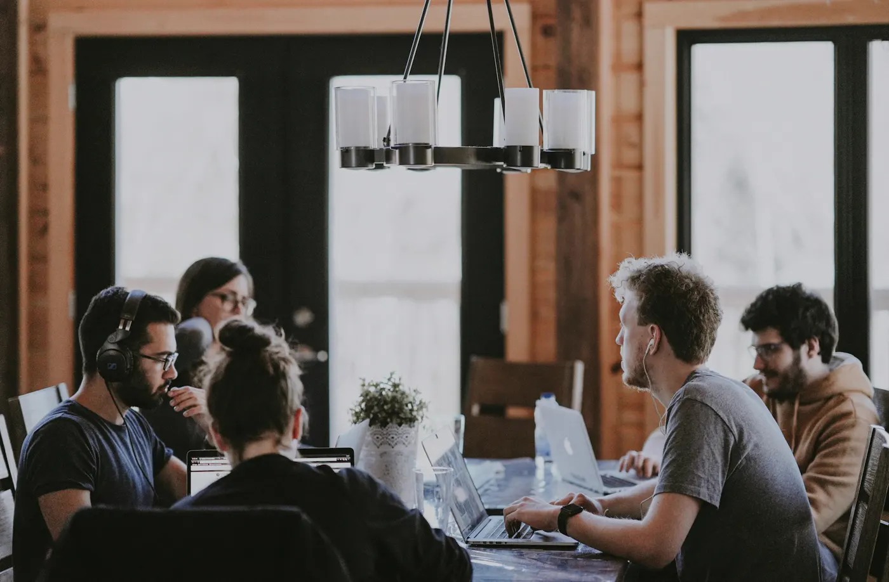
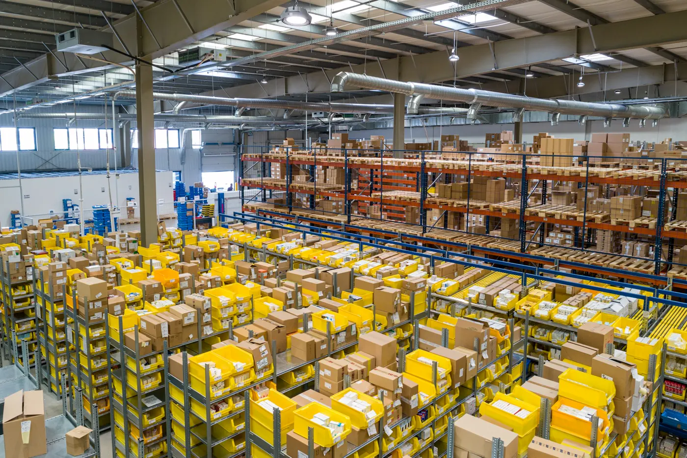
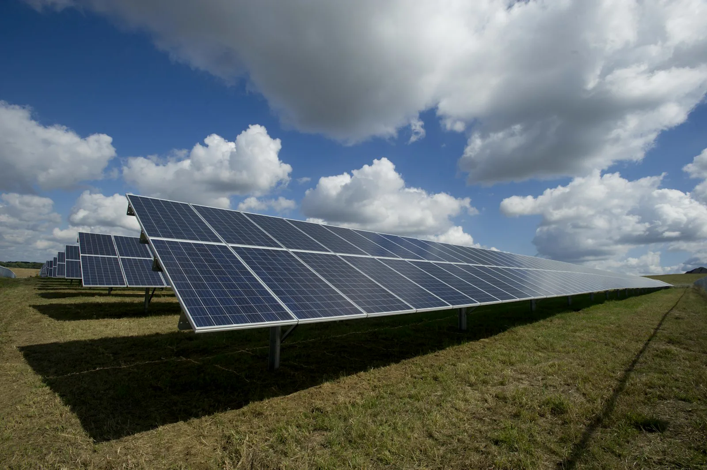

Práce / specialisté
Pro firmy i lidi: napište obor, město, počet lidí nebo zkušenosti a domluvíme další postup.
Tedition EU • Práce, dokumenty a projekty v Česku
Propojujeme firmy se specialisty, pomáháme s praktickými kroky kolem práce, dokumentů, podnikání a projektů v Česku. Napište nám a domluvíme další postup.
Rychlý vstup
Nemusíte mít připravený dlouhý popis. Stačí kontakt, město a stručně napsat, jestli řešíte práci, dokumenty, podnikání nebo projekt.
Pro firmy i lidi: napište obor, město, počet lidí nebo zkušenosti a domluvíme další postup.
Víza, pobytové kroky, S.R.O, živnost, A1, faktury nebo DPH - popište situaci bez zbytečné administrativy.

Individuální zadání pro Česko, Německo nebo okolí: specialisté, technické směry, výroba, stavební nebo projektová podpora.
Jednoduchá komunikace
Landing page je postavený tak, aby návštěvník rychle pochopil, kam napsat, co poslat a jaký další krok čekat.

Služby
Tedition EU je navržený jako seriózní kontaktní hub pro lidi, firmy a projekty v Česku. Text používá bezpečné formulace bez neověřených právních slibů.

Pomáháme propojit firmy a lidi podle konkrétní potřeby projektu.
Pomoc s přípravou podkladů pro víza, pobyt a další administrativu podle situace.

Podpora při základních podnikatelských krocích a orientaci v možnostech.

Pomoc s praktickými otázkami kolem fakturace a spolupráce.

Individuální řešení pro firmy v Česku, Německu a okolí podle oboru a zadání.

Možnost řešit pracovní a projektové potřeby také v technických, stavebních a výrobních oborech.
Pro koho
Stránka je postavená tak, aby každý návštěvník rychle našel svůj vstup: firma, uchazeč, podnikatel nebo projektový partner.
Pokud potřebujete specialisty, provozní podporu nebo řešíte projekt v Česku, Německu a okolí.
Pokud řešíte práci, obor, město, zkušenosti nebo další praktické kroky kolem působení v Česku.
Pokud potřebujete orientaci kolem S.R.O, živnosti, A1, fakturace nebo základních podnikatelských kroků.
Pokud máte konkrétní technické, výrobní, solární, stavební nebo servisní zadání a hledáte další postup.
Postup
Cílem je odstranit nejistotu. Návštěvník ví, co má poslat, a klient dostane použitelnou poptávku.
Facebook, formulář nebo telefon po doplnění kontaktů.
Město, obor, dokumenty, projekt, termín nebo počet lidí.
Směr se řeší podle konkrétní situace a potvrzených možností.
Další postup se potvrdí individuálně podle zadání.
Důvěra bez přehánění
Web nepoužívá smyšlené recenze, neověřená čísla ani garantované výsledky. Staví na jasné nabídce, kontaktech a jednoduchém postupu.
Kontakt
Napište, co řešíte. Stačí stručně popsat situaci a Tedition EU se vám ozve s dalším postupem.